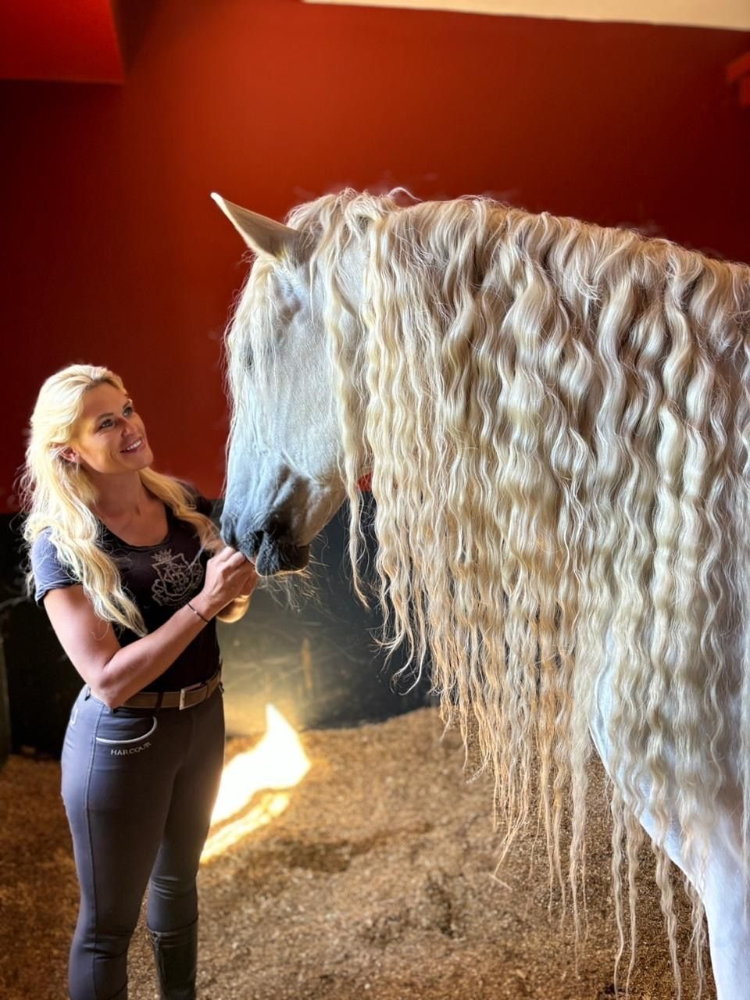

Fondatrice du domaine
Catherine Evrard
Belge d'origine, je vis au Maroc depuis plus de dix ans. Les chevaux m'ont menée aux quatre coins du monde, auprès de ceux qui savent les comprendre. De chaque rencontre, j'ai gardé le meilleur.
Aujourd'hui, je le transmets ici, au Domaine Apolo. Mon approche tient en quatre mots : confiance, connexion, cadre, contrôle.
Venir apprendre au domaine, c'est apprendre pour le cheval comme pour soi : l'observer, le comprendre, puis évoluer ensemble.
Art · Connexion · Excellence